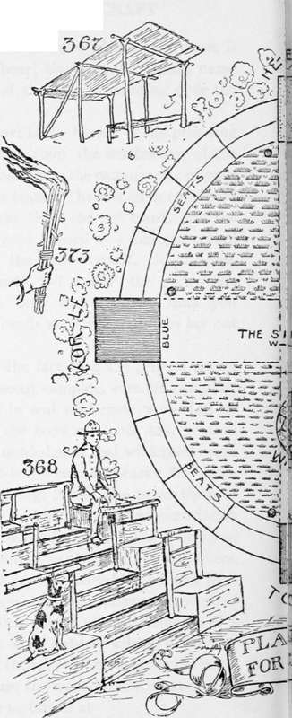
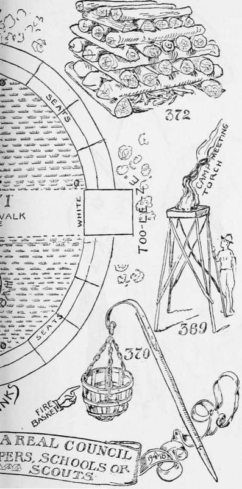

How To Divide The Council Fire Ground
Description
This section is from the book "The Book Of Camp-Lore And Woodcraft", by Dan Beard. Also available from Amazon: The Book of Camp-Lore and Woodcraft.
How To Divide The Council Fire Ground
This infinity talk has suggested to us a good idea, so we must thank our highbrow dictionary while we lay our council ground out with the major axis (the longest diameter) extending due north and south, and the minor axis (the shortest diameter) extending due east and west, like any other well regulated council or lodge, and we will put the fire-place near the southern end S (Fig. 37l), while around the ellipse we will arrange the seats, which may be of logs or stumps or sections of logs set up on end, as I used in one of my camps, or the seats may be rough plank benches, or they may be ponchos spread upon the ground with the shiny side down to keep the dampness from the audience as it squats tailor-fashion upon the ponchos.
The Four Courts
Are composed of shacks, such as are shown by Fig. 367. He-le-jah (Fig. 371), being the Court of Knowledge, is the only court having an elevated platform, or pulpit, or speaker's stand (Fig. 368). On each side of each court there should be a torch; Fig. 369 is what we will call the camp meeting torch; Fig. 370 is what we will call the steamboat torch; it must be made by a blacksmith. It is an iron basket supported by iron chains, hung down from an iron band at the top of a staff; the latter is shod with an iron point so that it may be thrust into the ground. These fire baskets I have used with success in one of my camps. But homemade torches are to be preferred (see Fig. 369). A hand torch (Fig. 373) may be made of pine, spruce or cedar slivers and used for processions entering the council grounds; this gives a thrilling effect.
In the diagram (Fig. 370), the staff is short, but it should be long enough to place the torch as high above the ground as a chandelier is above the floor at home. Fig. 372 shows the method of piling up the wood for the council fire. The kindling wood is first placed upon the ground ready to light at a moment's notice; over that the heavy wood is piled, as shown in the diagram. This fire should never be lighted with a match; that is terrible bad form. The use of flint and steel or a rubbing stick to make fire is the proper ceremony for such occasions.
Fig. 374 shows how to make a fire box of sticks. This is an aeroplane view of a fire box, that is, a view from above, looking down upon it. This box should be filled with sand, clay or dirt, upon which the fire is built. Fig. 375 and Fig. 376 show you how to lash the framework together. Fig. 377 shows how to put up the framework. Fig. 369 is the finished torch.
The idea of this torch is to have the light above the heads of the campers. The trouble with a fire upon the ground is that while the flames give light they also hide part of the crowd, and the smoke is always in someone's face. This elevated torch is a brand new idea for this purpose. It will be adopted all over the country and credited to all sorts of sources and people, but you must remember that it was designed for the readers of this book.
If milled lumber is used in building the shacks for the four courts, it should be camouflaged with paint or stain so as to look rustic. It may be roofed with boards and the boards covered with tar paper, or any of the modern roofing materials to be had, but in that case the roof should be camouflaged by laying poles over the top of it, or, if poles are not available, covering the top with sods.
You see the idea is this: we are having a COUNCIL FIRE— not something else— and we want the thing to look wild and rustic because that is part of the game, and if we are compelled to go to the lumberyard for our material, which most of us will have to do, then we must conceal this fact as far as possible by camouflage. In front of the South Court on Fig. 371 is the fire-place made of flat stones set in the earth.
Continue to: